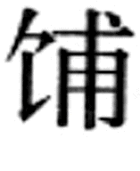

凶礼是哀悯吊唁忧患之礼。《周礼·春官·大宗伯》说：“以凶礼哀邦国之忧。”郑玄注云，“哀”是“救患分灾”之意，是以实际的措施抗灾救患，不限于表达哀悯之情。凶礼的内容有：以丧礼哀死亡；以荒礼哀凶札；以吊礼哀祸灾；以礼哀围败；以恤礼哀寇乱。
丧礼指丧葬之礼，丧是哀悼、殡葬死者的礼仪，葬是厝置死者遗体的礼仪，一个是埋葬制度，一个是居丧制度。人死之后，依地位高低、身份尊卑、财产多寡，丧礼形式不同，等级分明。以下分为殡葬、丧服、墓葬等三个方面的内容，分加叙述。
即举办丧事、吊唁祭奠的礼仪。在《仪礼》中有《士丧礼》、《既夕礼》、《士虞礼》等篇专论丧礼，《周礼》和《礼记》也有不少记载。礼经所记丧礼，本来是士以上的贵族的制度，但汉代以后成为制定丧礼制度的基本依据。和一切礼制一样，殡葬之礼尊卑有别。首先，死者的身份不同，死的叫法也不同。《礼记·曲礼下》说：“天子死曰崩，诸侯曰薨，大夫曰卒，士曰不禄，庶人曰死。”
（1）初终。垂危之人要居于正寝、正室，叫做“适寝。”将死之时，家属守候在床边。《礼记·丧大记》说：“属纩以俟绝气。”“属纩”，就是用新的丝绵絮放在临终者的口鼻上观察是否还有呼吸。验明死者已经断气，诸子、兄弟、亲戚、侍者皆哭。
（2）复。死者初亡，要立即举行招魂仪式。《礼记·檀弓下》：“复，尽爱之道也。有祷祠之心焉，望反诸幽，求诸鬼神之道也。”这是为了挽回死者生命的最后的努力。由复者拿着死者的衣服，一手执领，一手执腰，面向北方（幽冥世界）拉长调子高声呼喊死者的名字，表示希望把他的灵魂招回来，如此重复多次。然后由另一个人接过衣服给死者穿上。
（3）殓。复过之后，将死者的遗体安放在正寝南窗下的床上，要进行“楔齿”，即用角柶（一种小角形器）插进死者上下牙齿之间，把嘴撑开，以便日后饭含。再用一种叫“燕几”的小木几固定死者的双足，以便日后穿鞋，这叫做“缀足”。然后用特制的殓衾覆盖尸体，即“殓”。在尸体的东侧，要供设酒食，让鬼魂饮用，明清时叫“倒头饭”。在堂上要悬挂帷帐，把死者和生人隔开。死者家属要换掉漂亮鲜艳的衣服，摘除各种装饰品，穿上素色的衣服，开始居丧。
（4）命赴（讣）。即报丧，“赴”后写作“讣”。丧主向死者的亲属、上级、友人报告死讯，如以文书形式报告，称为讣告、讣文。古代妇女不能主丧，丧主一般是死者的儿子，由长子领头，父丧则称孤子，母丧称哀子，如果母或父先死，又逢父或母之丧，则称孤哀子。如果长子早死，则以长孙居前，称承重孙。讣告有一定格式体例，写明死者姓名、简历、生卒年月日时及出殡日期。讣告之外通常还附有一种哀启，详述死者生平。
（5）吊唁致襚。死者亲友接到报丧讣告后前来吊丧，对死者家属表示慰问叫做唁。死者家属哭尸于室，对前来吊唁的人依礼迎送，跪拜答谢。吊唁者要携带赠送给死者的衣被，称为致襚。
（6）铭旌。在堂前西阶用竹竿悬挂明旌，上书“某某之柩”。明旌用长条的帛制作，长短按死者身份高低有区别。《礼记·檀弓下》：“铭，明旌也，以死者为不可别已，故以其旗识之。”《礼记·丧服小记》：“复与书铭，自天子达于士，其辞一也。男子称名，妇人书姓与伯仲，如不知姓则书氏。”隋唐以后明旌比较讲究，用绛帛粉书，品官写某官某公之柩，一品至三品长九尺，四五品长八尺，六品以下长七尺。士人则父称显考，母称显妣。
（7）沐浴。为死者沐浴表示洁净返本。先在堂前西阶西面墙下掘坎为灶，将洗米水烧热，为死者洁身。再洗头发，修剪手足指甲。洗沐下来的乱发，剪下的指甲和楔齿用的角栖要埋入坎中。沐浴后的水，也倒入坎中。
（8）饭含、袭、设冒。饭含是将珠、玉、米、贝等物放在死者口中。《白虎通·崩薨》：“所以有饭含何？缘生食，今死不欲虚其口，故含。用珠宝物何也？有益死者形体，故天子饭以玉，诸侯饭以珠，大夫以米，士以贝也。”或说放在死者口中的粮食与碎玉掺和物叫饭，珠玉等物叫含。周礼，天子饭黍含玉，诸侯饭粱含璧，大夫饭稷含珠，天子之士饭粱含贝，诸侯之士饭稻含贝。袭，是为死者穿新衣，衣服的多少、质地及样式也依地位高下而有别。内衣之外，一套叫一称。周礼天子十二称，上公九称，诸侯七称，大夫五称，士三称。还有，死者的耳朵要用叫做瑱的小块的玉器塞住，用瞑目遮盖脸部，并加冠、着履。袭毕，要用衾覆盖全身，这叫做设冒。做完这些程序，将尸床移至堂中。
（9）设重、设燎。重是临时性的神主，后世叫牌位，是死者的象征。用木头制作，置于堂前庭中，大小依死者身份高低而有别。晚上在庭中、堂上要点燃盆燎炬火，后世改用蜡烛，这叫做设燎，为的是便于死者的灵魂来享用供品。
以上仪节通常都在初终后一天内完成。
（10）小殓。普通人死后第二天要正式穿着入棺的寿衣，称为小殓。诸侯是死后五日小殓，天子是死后七日小殓。小殓时先把各种殓衣连同亲友赠送之襚陈列于房中，选择使用，并陈馔于堂下，一面为死者着装，一面祭奠。死者的近亲抚尸捶胸顿足痛哭，叫做擗踊而哭，表示极度悲痛。着装完毕，用衾被裹尸，外加绞带束好。周礼国君用锦衾，大夫用缟（白色细绢）衾，士用缁（黑布）衾。参加小殓仪式的亲友致襚、致奠，主人答谢拜送。夜间庭堂继续设燎。
（11）大殓。小殓后过一天举行入棺仪式，叫大殓。大殓前也要将殓衣陈列于房，陈馔于堂下，抬入棺木后，主人主妇擗踊而哭。然后在执事协助下，在棺内铺席置衾，主人奉尸入棺，盖棺，复擗踊痛哭。然后举行祭奠，宾客向死者行礼，主人答拜送客。已经盛殓尸体的棺称柩，停柩称殡，大殓礼毕称既殡。大殓后不再设燎。
（12）成服。既殡之后，死者家属按照血缘关系的远近穿着不同等级的丧服叫做成服。
（13）朝夕哭、奠。成服后至下葬前，每天一早一晚要在殡所哭奠，称为朝夕哭、朝夕奠。或有宾客吊唁致奠，主人也须迎送答拜。
（14）筮宅、卜日。请人占卦选择墓地和下葬日期。周礼规定，停殡待葬的日期依死者身份高下而长短不一。
（15）既夕哭。下葬前两天的晚上，在灵柩前作最后一次哭奠，称为既夕哭。
（16）迁柩。下葬前一天，先把灵柩用灵车迁入祖庙内停放。启殡前取下明旌放在重上，载重并行，要用布拂柩，以去除凶邪之气。灵柩迁入祖庙后，进行祭奠，叫祖奠。后世迁柩之礼不常行。高级官员死后，启殡前还有赠谥之礼，即根据死者的事迹给他一个相应的名号，叫做“谥”；以国君的名义颁布，通常都是褒美之义。
（17）发引。后世也叫出殡，即下葬之日柩车启行，前往墓地。亲友出车马礼帛助祭叫致赗，赠送钱物叫致赙。行前要将随葬品一一陈列，对灵柩诵读遣册（随葬品清单），行奠祭礼。发引队伍由丧主领头，边哭边行，亲友手执牵引灵车的绋，走在前面。灵车叫做柳车，又称。其大小、装饰、挽车人数及用以屏障的翣，都有规格等级之别。如果墓地较远，送葬人也可以乘车前往。后世出殡还有乐队前导，雇人抬着纸札的明器，请僧尼念经，抛撒纸钱，队伍所经之处亲友沿路设祭等礼俗，称为大出丧。
（18）下葬。墓地已预先挖好墓圹，穴内铺垫石灰、木炭，或筑有墓室，墓前树立墓碑。灵车到达后，抬下灵柩，又有祭奠。用绳索将灵柩缓缓放入墓圹中。此时，家属男东女西肃立，主人捶胸顿足痛哭。棺木周边放置随葬品，上面用棺衣覆盖，称为加见。见上再铺席，加抗木，然后用土掩埋，并筑土成坟。大型的墓室，灵柩要通过墓道进入，有数棺数椁者，程序更为复杂，礼仪当更为繁缛。（图4—21）
图4-21 河南三门峡虢季墓墓室
（19）反哭。死者灵柩安葬完毕，主人用灵车奉重而回，回到殡所，升堂而哭，这就叫做反哭。或说反哭应在祖庙停柩之所进行。
（20）虞祭。反哭后要进行虞祭。虞是安的意思，死者形体已经安葬，但鬼魂无所归依，需要设祭安厝。《仪礼·既夕礼》贾公彦疏云：“主人孝子，葬之时，送形而往，迎魂而返，恐魂神不安，故设三虞以安之。”士设三虞，大夫五虞，诸侯七虞。初虞在葬后第一个柔日（天干逢乙、丁、己、辛、癸为柔日）中午举行，逢下一个柔日再虞。三虞则在刚日（天干逢甲、丙、戊、庚、壬为刚日）举行。虞祭祭品丰盛，礼仪隆重，要为死者正式设立神主牌位。神主用桑木制作，上书死者官爵名讳。先秦时初虞祭礼不用牌位，而由活人充当“尸”，有迎尸入门之礼，尸是死者神灵的象征，代表死者接受祭享，一般由死者的孙子担任。
（21）卒哭。即止哭，丧主可以在此后“止无时之哭”。《礼记·杂记下》说：“士三月而葬，是月也卒哭。大夫三月而葬，五月而卒哭。诸侯五月而葬，七月而卒哭。”先秦时卒哭祭礼要饯尸于门外，尸代表死者接受献酒，表示饯行。死者的魂灵从此离开家宅。后世卒哭通常都在丧后一百天时举行。佛教传入中国后影响很大，佛家有人生七七四十九天魂魄生，人死七七四十九天魂魄散之说。因而有“做七”的习俗，即人死后每隔七天作一次佛事，设斋祭奠。作七以五七最隆重，七七也称为断七，相当于卒哭。
（22）祔。卒哭后次日，将死者的神主敬奉于祖庙，依昭穆顺序安置在神座上，与祖先一起合祭，称为祔。祭毕，仍奉神主归家。
从虞祭开始，对死者的祭祀由丧礼改为吉礼，祭时不必再哭。丧礼的主要程序已进行完毕。但传统礼制规定居父母之丧，丧期为3年，一般是25个月。
（23）小祥。死者死亡一周年之时，举行小祥之祭。小祥时要用栗木重新制作神主，称为吉主，用以取代桑木制作的虞主。但后世并不严格实行，通常都是只用一个神主。
（24）大祥。死者死亡满两周年时，举行大祥之祭。所谓两周年，实际上是25个月之后。大祥之祭后，死者神主正式迁入祖庙。
（25）禫祭。大祥之祭后，当月又举行禫祭。这是丧主的除服之祭，禫祭后，丧主除去丧服，停止居丧，恢复正常生活。《礼记·三年问》：“三年之丧，二十五月而毕。”或说，禫祭应当在大祥后再隔一个月举行，3年之丧实为27个月。父母去世的周年纪念日称忌日，每逢忌日，仍要禁止饮酒作乐。《礼记·祭义》说：“君子有终身之丧，忌日之谓也。”
即居丧者依照与死者的亲疏关系决定的服饰、居丧时间及居丧期间生活起居规范。《尚书·康王之诰》记，西周成王去世后，其子康王继位，即位典礼上康王身着天子服饰，麻冕黼裳，接受诸侯与群臣的朝贺。礼毕，“王释冕，反（返）丧服”，再按礼制规定换上为父亲服丧的服饰。《左传·襄公十七年》记：“齐晏桓子卒，晏婴粗衰斩，苴绖、带、杖，菅屦，食鬻，居倚庐，寝苫，枕草。”晏子为其父居丧的服制，与礼经所说一致。《仪礼·丧服》制定了规范化的丧服制度，历代王朝也都用法律形式对丧服制度作了规定。《仪礼·丧服》所规定的丧服有“五服”，即斩衰、齐衰、大功、小功、缌麻五个等级。这五个等级分别适用于与死者亲疏远近不同的各种亲属，五个等级各有特定的居丧服饰、居丧时间和行为规范。（图4—22）
图4-22 斩衰、齐衰、大功丧服示意
这是最重的丧服，适用于子为父、未嫁之女为父、嫁后因故复从父居之女为父、嗣子为所嗣父、承重孙为祖父、妻妾为夫、父为长子。明清时规定子（未嫁之女及嫁后复归之女）为母，包括嫡母、继母、生母也服斩衰。全套丧服是：斩衰裳，苴绖、苴杖、绞带、冠绳缨、菅屦。斩衰用最粗的生麻布制作，“斩”即不加缝缉。苴绖是粗麻布带子，分别缠在腰间束衣和头部束发。苴杖，竹杖，苴表示粗恶，俗称哭丧棒。绞带，粗麻绳带子，用于系蔽膝。冠绳缨，丧冠用粗麻布制作，以粗麻绳为缨。菅屦，用菅草编制的草鞋，不作修饰。斩衰之服丧期三年，实际是两周年外加第三年的头一个月。居丧期间，行为有严格规范。《礼记·间传》说：“斩衰三日不食。”《问丧》：“亲始死……水浆不入口，三日不举火，故邻里为之糜粥以饮食之。”一开始就要绝食三天，既殡之后可以食粥，“朝一溢（1／24升）米，莫（暮）一溢米”。百日卒哭后，可以“疏食水饮”。一年小祥后，可以“食菜果”；两年大祥后，可以用酱醋调味；禫祭后丧满除服，才能饮酒食肉。［64］但年老有病可以变通。《礼记·曲礼》：“有疾则饮酒食肉，疾止复初。……五十不致毁，六十不毁，七十唯衰麻在身，饮酒食肉处于内。”在居处方面，孝子要“居倚庐，寝苫枕块”，“寝不脱绖带”。既葬后，倚庐内壁可以涂泥挡风；百日卒哭后，可对倚庐稍加修整，加蒲草席。一年小祥，拆除居倚庐，改建小屋，用白灰涂墙，称为垩室，可以使用普通寝席。二年大祥，复居正寝，但仍不能用床。服丧期间，也规定不能婚娶，不得赴宴，不得听音乐，不得游戏嬉笑；还有三月不沐，夫妇不能同居等等。东汉以后，服斩衰丧的官员，必须离任守丧，叫做丁艰或丁忧。父丧称丁外艰或丁外忧，母丧称丁内艰或丁内忧。到丧期结束，才能重新复职。
齐衰是次于斩衰的第二等丧服，本身又分为四个等级。
i．齐衰三年。适用于父已先卒，子及未嫁之女、嫁后复归之女为母，母为长子。丧服为：疏衰裳、齐，牡麻绖，冠布缨，削杖，布带，疏屦。齐衰三年丧期也是名义上三年，实际上25个月（或说27个月）。饮食起居规定与斩衰三年相似，只是改三日不食为二日不食，也要居于倚庐。
ii．齐衰杖期。适用于父尚在世，子、未嫁之女、已嫁复归之女为母，夫为妻。齐衰杖期丧服与齐衰三年完全相同，只是丧期仅为一年。饮食则初丧三餐不食，以后疏食水饮，不食肉、不饮酒；居于垩室。
iii．齐衰不杖期。适用于为祖父母、伯叔父母、兄弟、未嫁之姊妹、长子以外的众子以及兄弟之子。此外，祖父母为嫡孙、出嗣之子为本生父母、已嫁之女为父母、随母改嫁之子为同居继父、妇为舅姑、妇为夫之兄弟、妾为女君（正妻）也服齐衰不杖期。齐衰不杖期的丧期与齐衰杖期相同，丧服则不用杖，又改疏屦为麻屦。饮食也是初丧三餐不食，以后疏食水饮，三月既葬后可食肉饮酒，但不能与人会饮共食。居于垩室，三月后归正寝。
iv．齐衰三月。适用于为曾祖父母、高祖父母。此外，一般宗族成员为宗子也服齐衰三月。丧期三个月，丧服与齐衰不杖期相似，只是改麻屦为绳屦。饮食居处初同齐衰不杖期，三月后复归正常。
大功是次于齐衰的丧服，适用于为从父兄弟，已嫁之姑母、姊妹、女儿，未嫁之从父姊妹及孙女，嫡长孙以外的众孙、未嫁孙女，嫡长子妻。此外，已嫁之女为兄弟及兄弟之子，已嫁、未嫁之女为伯叔父母、姑母、姊妹，妻为夫之祖父母、伯叔父母以及夫之兄弟之女已嫁者，出嗣之子为同父兄弟及未嫁姊妹，都是大功之服。大功丧期九月，丧服为布衰裳，牡麻绖，冠布缨，布带，绳屦。初丧时三餐不食，葬前居垩室，疏食水饮，三月既葬后饮食起居复归正常。
小功是次于大功的丧服，适用于为从祖父母，堂伯叔父母，从祖兄弟，已嫁之从父姊妹及孙女，长子外的诸子之妻，未嫁之从祖姑姊妹，外祖父母，从母（姨）。此外，妻为娣娰（妯娌）、夫之姑母、姊妹，出嗣之子为同父姊妹之已嫁者，也服小功。小功丧期为五个月，丧服为布衰裳、澡麻带、绖、冠布缨、吉屦无。
缌麻是最轻一等的丧服。适用于为族曾祖父母、族祖父母、族父母、族兄弟、从祖兄弟之子、曾孙、玄孙、已嫁之从祖姑姊妹、长孙之外的诸孙之妻、姑祖母、姑表兄弟、舅表兄弟、姨表兄弟、岳父母、舅父、女婿、外孙。此外，妻为夫之曾祖父母、伯叔祖父母、从祖父母、从夫兄弟之妻，也都服缌麻之丧。缌麻丧期为三个月，缌也是一种麻制的比较稀疏的布。初丧时有一两餐不食、丧期内不饮酒食肉，其他没有特别的规定。
以上着五种丧服者，另有受服规定，即在居丧一定时间后，更换丧服，逐渐由重而轻。如斩衰三年之丧，受服五次。
中国传统的葬式是土葬，即为死者修建坟墓埋葬之。坟墓二字，古义有别。《礼记·檀弓上》引孔子说：“古也墓而不坟。”郑玄注说：“墓为兆域，今之封茔也。古谓殷时也。土之高者曰坟。”也就是说，有埋葬棺木的土穴的地方叫墓，也叫茔，整个墓地叫兆域，在地面堆土成丘，叫坟。扬雄《方言》说：“葬而无坟谓之墓。”据文献记载，上古时墓葬是没有封土堆的。西汉刘向说：“殷汤无葬处，文、武、周公葬于毕，秦穆公葬于雍橐泉宫祈年馆下……皆无丘垄之处。”［65］东汉崔寔《政论》里也说：“文武之兆，与平地齐。”近代考古发掘所见殷商大墓、秦公大墓等，虽然墓穴规模巨大，但墓与地表平齐，没有发现任何有高高隆起的大坟的迹象。
土丘坟的出现可能在春秋中期。《礼记·檀弓上》记孔子说：“吾见封之若堂者矣，见若坊者矣，见若覆夏屋者矣，见若斧者矣。从若斧者焉，马鬣封之谓也。”孔子为他的父母建合葬墓，为了便于上墓祭祀，“于是封之，崇四尺”。他自己死后，墓上也起了坟堆，“鲁世世相传以岁时奉祀孔子冢”。［66］土丘墓出现后，迅速流行，且以坟头的高低小大，作为死者身份地位的标志。《周礼·冢人》：“以爵等为丘封之度与其树数”，“尊者丘高而树多，卑者封下而树少。”《吕氏春秋·孟冬纪》：“营丘垄之小大、高卑、薄厚之度，贵贱之等级。”考古发现的春秋晚期至战国的墓葬，普遍有高大的封土堆。像河北平山战国中山王墓，封土东西92米，南北110米，分为台阶式三层，最高处距地面15米，考虑到经历了两千多年的风吹雨淋，原来的规模肯定更大。
土丘坟的形状，从战国起都用方台形，考古界称为覆斗形，从秦始皇陵到宋代帝王陵都是这种形状。一般达官贵人及平民百姓的坟是圆丘形或半圆丘形。后来，由于方台形封土堆难以长期保持原貌，所以帝王陵墓也逐渐发生了变化，五代时南方小国君主的陵墓就改为半圆形。明代起，帝王陵墓的封土堆也变为半圆形，称之为宝顶，也称为独龙阜，上面栽满树木，让它郁郁葱葱。
墓穴也称为墓圹，有竖穴和横穴之分。竖穴是从地面一直往下挖掘而成，横穴是从地表斜向掘进，横着掏挖逐渐达到一定深度。墓穴是安放棺木和随葬品的空间，距地表的深度没有统一的标准，一般大型墓葬墓穴大多比较深。除了土室外，还有砖室、石室、木椁室等，形制规模各有不同。
墓室的建造，实际上是模仿现实生活中的宫室房屋。先秦时的屋室，大致是前堂后室两个部分。前部中央为堂，是日常起居、接待宾客之所，堂前空地为廷，堂东西两壁为序，两序外又各有一个狭长的空间，且前后隔为两段，前为厢，后为夹。后部中央为室，室左右为房。室和房是住人的地方。墓室的格局也如此，基本上是分为前后两部分，前部相当于“堂”，放随葬品；后部相当于“室”，放置棺木。帝王将相的大型墓葬的墓室分室更多，也与他们生前的宫殿居室制度是相应的。
i．寝。古人认为，人死后灵魂不灭，因此不仅要有墓室安葬遗体，还需要在地面上建造供其灵魂活动的房屋，这种供奉死者灵魂的墓地建筑叫做寝。在安阳殷墟发现的大型的商王陵墓，地表都有寝的遗迹。其位置正好在墓室的上方，面积也与墓室相当。河北平山战国中山王墓封土堆上也有建筑物遗迹。墓中出土的《兆域图》上还清楚地标明这些建筑叫“王堂”、“王后堂”、“哀后堂”、“夫人堂”。（图4—23）秦汉时，帝王陵的寝建在墓侧。汉代皇帝的寝，陈设墓主生前用过的座位、床、几、匣匮、被枕、衣冠等日常用品，每天要按照一定时刻铺设整理，准备盥洗用水和器具，一日四次进献食物。每个月还要把寝中的衣冠取出，由车骑引导护送，出游到接受祭祀的庙里。一些富豪的墓地建筑也建得十分豪华。《盐铁论·散不足》说：“今富者积土成山，列树成林，台榭连阁，集观增楼。”
图4-23 河北平山中山王陵兆域图铜版及复原图
ii．祠堂。祠堂起于西汉中期，又称享堂，是在特定的日子对死者进行祭祀的地方。祠堂中设有祭台，安放神主，祭祀时供奉祭品，招致死者的灵魂前来享用。东汉时随着墓祭习俗的形成，墓前建祠堂已很普遍，一些强宗大族把墓祭当做团结族众的一种手段，很重视祠堂建设，除了祭祀场所外，还有供族人休息和祭后宴饮的地方，往往建成有相当规模的建筑群。山东肥城孝堂山郭氏石祠和山东济宁紫云山武氏石祠至今保存完好。后世祠堂大多不再建于墓地，但富家大族仍在正式祠堂之外，在墓地建有小屋供上墓时祭祀用。
iii．墓阙。阙本是一种高台，用于登高望远，一般建于宫殿前。墓阙仿照阙的形制，具体而微，多用石块垒砌而成，由基座、阙身和带檐阙顶组成，是供墓主的灵魂登临的象征性建筑。有的墓阙还刻有记录墓主生平的铭文。墓阙大约起于西汉中期，东汉时很盛行，后代基本废弃。
iv．墓碑。《说文》：“碑，竖石也。”碑，原本为安放棺木的器具，立在墓穴四角或两边，上端凿有圆孔，叫做穿。安放棺木时要以穿为支点，用绳索缓缓将吊悬的棺木放进墓穴。这种碑有木制的，也有石制的，棺木放进墓穴，碑也埋入墓中。西汉末年起，出现了墓碑，即在石制的碑上刻写死者的官爵姓名，立于墓前，这就成了墓碑。早期墓碑顶端或作方尖形，或作圆弧形。东汉时立碑蔚成风气，许多墓碑还刻有墓主家世及生平事迹，并有颂扬文字。唐宋准许一定级别的官员墓前立碑。碑首称碑额，刻螭、虎、龙、雀等图样，碑身下有基座，称为趺。礼制规定，五品以上螭首龟趺，高不过九尺；七品以上圭首方趺，高四尺。明清时规定，一品螭首龟趺，二品麒麟首龟趺，三品天禄、辟邪（传说中的两种神兽）首龟趺，四至七品圆首方趺，碑身、碑首及趺座的高、宽也皆有差别，庶人不得立碑。但实际上这一制度并未严格执行，所以平民百姓墓前也往往立有墓碑，不过形制比较矮小而已。帝王将相陵墓前辟有纵向的通道，称为神道。在神道上立碑就叫做神道碑。神道碑记述墓主家世和生平事迹及颂扬文字，而墓碑只刻官爵、姓氏、名讳。清代的礼制规定，品官墓碑书“某官某公之墓”，妇人书“某封某氏”；八九品以下墓碑书“某官某之墓”，无官庶士书“庶士某之墓”，妇书“某封氏”，无封书“某氏”。
v．石雕群。在墓前神道两侧陈列石雕人像、动物像和神兽像，象征死者生前的仪仗侍卫的阵容，也显示死者的地位身份。秦始皇陵陪葬坑的文武官员和兵士陶俑可能是这种石雕像之滥觞。现在看到的最早的石雕像是西汉遗物，汉武帝时名将霍去病墓前有动物及马踏匈奴等造型，具有纪功表彰的意义。墓前石人，后来有个专名，叫翁仲，是墓主生前的侍从。传说秦时有个名叫阮翁仲的人，身高一丈三尺，曾率兵守临洮，声震匈奴。死后秦始皇为他铸造铜像立于咸阳宫司马门，充当侍卫。所以后世将墓前的侍卫石人也叫做翁仲。各种石兽，叫做石像生。
葬具即盛放死者遗体的器具，土葬的葬具是棺椁，早期的棺是陶制的，或称为瓦棺，商代以后才用木棺。《礼记·檀弓上》和《丧大记》说，周制天子之棺四重，诸公三重，诸侯再重，大夫一重，士不重。意思是在内棺之外还套着四重、三重、二重、一重的外棺。各重棺都有特定名称，最外一层叫大棺，第二层叫属，这两层用梓木制作，因此棺木也称为梓棺或梓宫。第三层叫杝或椑，用椴木制作。第四层用水牛皮或犀牛皮制作，称为革棺。最内一层叫里棺。诸公以下由内至外递减，到士这一阶层就只有最外一层的大棺，而不得用套棺了。棺木的大小厚薄、装饰用料也有等级差别：诸侯大棺八寸，属六寸，椑四寸；上大夫大棺八寸，属六寸。下大夫大棺六寸，属四寸，士棺六寸。诸侯盖用漆，三衽（连接棺盖与棺身的木榫）三束（捆束棺身的皮条或缯帛）；大夫盖用漆，二衽二束；士盖不用漆，二衽二束。安放遗体的棺木内壁的装饰，诸侯用红绿二色丝绸，用金钉、象牙钉固定；大夫用黑绿二色丝绸，用牛骨钉固定；士用黑色丝绸，用牛骨钉固定。
在棺或套棺之外，间隔较大的空隙再加一层，就叫做椁。棺椁之间放置随葬品。《礼记》记，诸侯用松椁，大夫用柏椁，士用杂木椁。《荀子·礼论》说：“天子棺椁七重，诸侯五重，大夫三重，士再重。”这是指天子五棺二椁，诸侯四棺一椁或三棺二椁，大夫二棺一椁，士一棺一椁。这是周制，大概一直沿用到战国。考古发现的战国秦汉时期的大型墓葬的木椁，规模巨大，乃是墓主生前地上宫室建筑的象征，也称为椁室，内部用板壁或原木分割成若干块，如棺箱、头箱、边箱、足箱等。汉代皇帝和诸侯王墓中，椁室四周要用黄心的柏木块垒砌成墙，称为黄肠题凑。在北京大葆台西汉燕王墓和长沙西汉长沙王后墓中都发现了这种黄肠题凑的葬具。（图4—24）汉代以后这种椁室制度不再遵行。通常把套棺的外棺称为椁。唐宋规定不得以石为棺椁，不得雕镂彩画。明代规定，品官棺用油杉朱漆，椁用土杉；庶人棺用坚木，油杉为上，柏次之，土杉、松又次之；用黑漆、金漆，不得用朱红。
图4-24 北京大葆台西汉墓“黄肠题凑”墓室
古人认为人死之后还要进入另一个世界生活，因此死者要将生前的必需品随葬，在原始社会的墓葬中就发现有陶器、武器、工具及装饰品随葬。后来，贵族阶级的墓葬中将大量的奢侈的生活用品和代表其身份地位的物品随葬，厚葬的风气十分普遍。《墨子·节葬》曾记载当时的王公大人有丧者，“棺椁必重，葬埋必厚，衣衾必多，文绣必繁，丘陇必巨”，“诸侯死者，虚车〈库〉府，然后金玉珠玑比乎身，纶组节约，车马藏乎圹，又必多为屋幕、鼎鼓几梃壶滥〈鉴〉、戈剑羽旄齿革，寝而埋之”；《吕氏春秋·节丧》也说，“国弥大，家弥富，葬愈厚。含珠鳞施，夫玩好货宝，钟鼎壶滥〈鉴〉，舆马衣被戈剑，不可胜其数。诸养生之具，无所不从者”。除了厚葬金银珠宝、珍奇玩好，商周至战国，大型墓葬还普遍地杀人殉葬和使用车马随葬。厚葬，导致后世盗墓成风。经过多次的战乱，以及吸取了大批的墓葬被盗掘的教训，南北朝以后，除了帝王陵墓和少数显贵豪富的墓葬外，使用大量珍贵物品随葬的情形已经较少了。（图4—25）唐宋时，明令禁止各级官员和庶民在棺内放置金玉珠宝。
图4-25 辽陈国公主驸马合葬墓
专为随葬而制作的并无实际使用价值的各种器物模型叫做明器，多用陶、瓷、竹、木、石、纸等制作，仿制的物品有人物、家禽鸟兽、礼器、武器、工具、车舟、仓廪、房屋、庭院等，做成人物和鸟兽形的明器称为俑。与使用实物随葬相比，明器随葬花费较少，减少了物质与财富的浪费。北宋后，纸札的明器逐渐流行，这类明器在死者下葬时焚烧。明器的使用也有等级差别，唐代规定三品以上官员可用明器90事，四、五品可用60事，七、八、九品可用40事，庶人可用15事。明代规定，随葬用陶质、木质明器，公侯90事，一、二品官80事，三、四品70事，五品60事，六、七品30事，八、九品20事，庶民1事。
荒礼，指自然灾害引起歉收、损失和饥馑后，国家为救荒而采取的政治礼仪措施。我国以农业立国，国计民生最容易受自然灾害的影响，荒礼是历代统治都注意研究的政治问题。《礼记·曲礼》说：“岁凶，年谷不登，君膳不祭肺，马不食谷，驰道不除，祭事不悬，大夫不食粱，士饮酒不乐。”规定在饥荒之年要减损礼仪，节制饮食。《周礼·地官·大司徒》则更全面系统地提出了救荒的对策：“以荒政十有二聚万民：一曰散利，二曰薄征，三曰缓刑，四曰弛力，五曰舍禁，六曰去几，七曰省礼，八曰杀哀，九曰蕃乐，十曰多婚，十有一曰索鬼神，十有二曰除盗贼”，今分条简述如下。
散利是给灾民以救济，主要措施有三项，即：周、贷、粜。周，指周济，是无偿的赈给，这是遇到较大的自然灾害后采用的办法。《周礼·地官·乡师》云：“以岁时巡国及野，而周万民之囏阨，以王命施惠”，讲的就是周济灾民，乡师按时巡视各国，考察灾情，然后以天子的名义给予救济。贷，指借贷，发生灾荒时出借，收获以后归还，这往往是青黄不接的时候采用的办法。《周礼·地官》“旅师”之职，掌管国家征聚的部分谷物，“凡用粟，春颁而秋敛之”，就是为了救济春荒而予以借贷。
赈济灾民，用粟米、银钞、绢帛、食盐等，也常用施粥救饥之法。《礼记·檀弓》说，春秋时，卫国公叔文子煮粥救济灾民，这是我国最早的施粥的记载。救济灾民，又有兴工代赈之法，即招募受灾流民充当建设工程（一般是农田水利工程）的劳力。灾民得以自食其力，国家也颇有收益，增强了抗御自然灾害、发展生产的能力。救荒又有把受灾流民安置在年成较好的地区的民户中予以赈济的。
荒年要放粮，丰年就须有储积。国家历代皆有大规模的粮仓备荒，称为“常平仓”。隋开皇五年（585），度支尚书长孙平建议设立“义仓”，每年每家出粟麦一石，储之闾巷，以备凶荒。后来，类似的制度又称为“社仓”、“惠民仓”、“广惠仓”、“预备仓”等等，但是实行起来五花八门。或者确实有以丰补歉之用，或者公私侵渔，结果成为加赋厚敛的别名。
薄征，指蠲免、减少或缓征租赋。遇到灾害，由皇帝下达蠲除之令，叫做“灾蠲”。有时虽无灾害，皇帝为了表示恩惠，也减免部分租赋，叫做“恩蠲”，由于各地灾情常常不能及时上报，上报以后也往往迟疑不决，皇帝的蠲除诏令有时不能及时下达。
凶荒之年，人民为饥寒所迫，容易触犯法律，所以执法要适当宽缓，以示哀矜之意。《周礼·秋官·士师》说：“若邦凶荒，则以荒辩（贬）之法治之，令移民通财，纠守缓刑。”“荒辩（贬）之法”就是法律条款要有所贬损，以为权宜之计。
历代帝王每逢凶灾多有减刑、缓刑的诏令。这是由于古人认为自然灾害的发生乃是民间冤气郁滞，政治失当的报应，上天以天灾来警告人间的君王。
明代又有让罪犯交纳粟米救灾免罪的办法。景泰四年（1453），山东、河南、江北、直隶等地受灾，囚犯能够向受灾地区交纳粮食者，可以免罪。免死罪交粮60石，流徒三年40石，徒二年半35石……杖罪每10杖为1石，笞罪每10鞭为5斗。嘉靖时也采用过这个办法。
“力”指力役之征。“弛力”，即减免徭役。《周礼·地官·均人》说，国家的徭役按照年景的好坏征派，丰年每人服役三天，中年每人服役两天，下年每个服役一天，荒年不服役。但是历代徭役征发实际上都较《周礼》理想主义的规定繁重得多。遇到自然灾害，人民流离失所；严重时，饿殍载道，哀鸿遍野，在这种情况下，国家也不大可能再征发力役。有些统治者在凶荒之年，强行大兴土木，征集民夫，往往成为大规模农民起义的导火线。
有些朝代有交钱以代役的制度，如汉代的更赋，唐代的庸钱等，在遇到凶荒时，国家也常有减免的措施，以便于人民平安地度过荒年。
国有山泽园囿，平时严禁人民入内，凶荒时对灾民开放，百姓可以去采果蔬，捕猎渔樵，以为生计。如汉元帝初元元年（前48年），诏令云：“关东今年谷不登，民多困乏。其令郡国被灾害甚者毋出租赋。江海陂湖园池属少府者，以假贫民，勿租赋。”（《汉书·元帝纪》）但是当年继续大水成灾，二年（前47年）春，又诏令将水衡禁囿、宜春下苑、少府佽飞外池、严籞池田，假与贫民。唐贞观十一年（637），大雨成灾，谷水、洛水泛滥，太宗下令，“废明德宫之玄圃院，赐遭水家”［67］。诸如此类，“弛山林川泽之禁”，“开山场河泊之禁”，“弛猎禁”，“弛鱼禁”，“弛樵采禁”，为历朝逢灾时常用的措施。
“几”，本指门坎，这里指的是设关卡征税。“去几”，即废除关卡征税。我国古代大都实行重农抑商、扶本抑末的经济政策，在水陆交通要冲多设关卡，对往来商贾征取税收，并且制定相应的法令——津关令。由于商品经济极不发达，严重妨碍丰收地区和歉收地区的调剂与流通。苏轼曾说过，元祐时，他在浙西看到在连年水灾之后，有中等产业的人家，有钱无谷，竟至于“被服珠金，饿死于市”；而与此同时，黄州一带却因为“累岁谷熟，农夫连车载米入市，不了盐酪之费”。［68］本来完全可以丰凶相救，互通有无，然而却因关卡林立，税收过重，以至商贾不行，无人经营，影响财货谷物的流通。而在凶荒之年，国家常颁令放松关津之禁，宽缓关市之征。同时，也放松平时对人民严禁迁徙的限制，准许饥民通过关卡到富庶地区去“就食”。
省礼指减省庆贺、祭祀典礼或其中的某些仪式，前引《礼记·曲礼》所说“君膳不祭肺”、“祭事不悬”，就是说在飨燕饮食时不用肺作祭品，举行祭祀活动不悬挂钟磬乐器等。礼书还说，“年不顺成则天子素服，乘素车，食无乐”；“至于八月不雨，君不举”。［69］“举”指杀牲，食用美味佳肴。这也是降低礼仪规格的措施。减省了某些仪式，通常称为“杀礼”。
省礼的主要措施有：减膳，减乘舆，罢宴会，罢节日庆贺，避正殿，罢角抵游戏，以及太仆减省喂马谷料、水衡减省喂兽用肉、尚方御府停止制造豪华日用器物等。北魏孝文帝太和十一年（487）京都地区发生严重饥荒，韩麒麟上书说，造成饥荒的原因是民风不正，竟自矜夸，“车服第宅，奢僭无限；丧葬嫁娶，为费实多；贵富之家，童妾袨服；工商之族，玉食锦衣；农夫糟糠，蚕妇乏短褐”。结果造成“耕者日少，田有荒芜；谷帛罄于府库，宝货盈于市里，衣食匮于室，丽服溢于中路”。韩麒麟认为：“凡珍玩之物，皆宜禁断；吉凶之礼，备为格式；令贵贱有别，民归朴素。”［70］他关于“省礼”的想法，主要是针对“贵富之家”、“工商之族”的，这当然已经不只是救荒的权宜之计，而涉及一项长远的国家政策了。
这里专指减省凶礼的礼仪规格，主要是丧葬之礼不得大操大办，铺张浪费。
“蕃”，即藩，有藩屏、闭止之意。蕃乐，即停止、罢除演奏音乐及其他娱乐活动，后代也称为“彻乐”。汉宣帝本始四年（前70年）正月，因前一年有大旱之灾，下令太官损膳省宰，并裁减乐府的乐工，下放“使归就农业”。唐文宗太和七年（833），久旱不雨，诏令太常所属教坊女乐，停止演唱练习。有的朝代也有因为灾害而取消节日娱乐活动的，如宋仁宗时曾因河北地区发生水灾，取消了上元灯会。
多婚，指凶荒之年男女青年多为婚配，这就应当减省婚娶礼仪，从简结婚，不要为了礼仪的完备而影响了婚娶。这里包含着互相救助、保护以及增殖人口，补充由于灾荒而减少的人口的意思。
索鬼神，即找出与造成凶荒有关的鬼神予以祭祀。古人认为凶荒的发生是因为鬼神未加庇佑的缘故，很可能是在常规祭祀中没有祭到的鬼神发怒生气而降下了灾祸。所以，凶荒之时，往往要广祭群神。
“吉礼”中有“大雩”之礼，为求雨之祭。历代雩祭往往也是“靡神不举”。《隋书·礼仪志》记隋代雩坛，“孟夏之月，龙星见，则雩五方上帝，配以五人帝于上，以太祖武元帝配飨，五官从配于下”，“京师孟夏后旱，则祈雨”，祭祀祈祷，以七日为一轮，先后要祭到“岳、镇、海、渎及诸山川能兴云雨者”、“社稷及古来百辟卿士有益于人者”、“宗庙及古帝王有神祠者”、“神州”等等。宋代祈雨所祭，除天地、太庙、社稷、岳、镇、海、渎外，还祭祀五龙堂、城隍庙、九龙堂、浚沟庙，以及子张、子夏、信陵君、段干木，扁鹊、张仪、吴起、单雄信等庙，或者在寺观建道场，或者遣内臣分赴州郡，到河中之后土庙、太宁宫，亳州之太清宫、明道宫，兖州之会真宫、景灵宫、太极观，凤翔之太平宫，舒州之灵仙观，江州之太平观等处奉香祝祷，遍祭群神。
前面有“缓刑”一条，这里又讲“除盗贼”，显然是双管齐下，软硬兼施。对古史所谓盗贼，当然应有分析。其中确有杀戮无辜，图财害命的盗贼，也有杀富济贫，反抗压迫与剥削的造反者，二者不应混为一谈。凶荒之年，人民流离，民心浮动，走投无路，常常成为引发农民暴动的导火线。历史事实表明，多次大规模的农民起义都是在大荒之年爆发的，深受饥馑之苦与官府之害的百姓，揭竿而起，埋葬了一个又一个腐朽王朝。救荒之政第12条，强调“除盗贼”，正反映了统治阶级心理上所感受的威胁。但是，只要剥削制度存在，没有一个王朝真正能够妥善解决“除盗贼”的问题。
“札”，指疫疠疾病，即流行性传染病。因为凶荒之年，常常有疫疾流行，所以有的礼书中将“大荒、大札”并列，措施都是“移民、通财、舍禁、弛力、薄征、缓刑”等等，［71］有的礼书索性将“札礼”并入“荒礼”，放在一起叙述。
札礼，最紧迫的问题是葬死救病。许多疫疾是由于灾荒中死人未能及时掩埋而引起的。对死于凶荒疫疾者，历代常常赐给棺木或丧葬钱的办法。西汉河平四年（前25年），黄河泛滥，成帝派遣大臣前往巡视，下令对于被淹死不能自葬者，由地方官府提供棺木葬埋；已经葬埋者，赐给葬钱，每人二千钱。平帝元始二年（2年）因干旱蝗灾，疾疫流行，国家腾出府邸房舍安置病人，并派医生治疗，病死者赐钱安葬。
东汉建和三年（149），连年地震、大水，“京师厮舍，死者相枕，郡县阡陌，处处有之”。桓帝乃诏令对“有家属而贫无以葬者”，每人给三千钱，给丧家布三匹；对无亲属的死者，“于官壖（空旷之地）地葬之，表识姓名，为设祠祭”。［72］这种以官地埋葬死者的办法，后来发展成为“漏泽园”制度。
北宋神宗时曾有因贫困而无力安葬者，旅寄棺柩于僧寺，后来国家划给荒地命僧人代为安厝。凡安葬三千死者，寺院可以剃度僧人一名；连续三年以上，赐给紫衣袈裟、师号。徽宗崇宁三年（1104），太师蔡京将此法推而广之，设置“漏泽园”，用官家空地建园，安排专业“瘗人”，负责埋葬死者，规定葬穴深三尺，以免暴露于外。全国州县及各城寨镇市有居民千户以上的地方也普遍建立“漏泽园”。“漏泽”一语，典出《汉书·吾丘寿王传》。寿王曾说：“臣闻周德始乎后稷，长于公刘，大于太王，成于文武，显于周公，德泽上昭，天下漏泉，无所不通。”颜师古注说：“漏，言润泽下沾，如屋之漏。”“漏泽”表示德泽润下，人民都能得到恩惠。当时，还有收容“疾病之无归者”的“安济坊”，也招募僧人主持，凡治愈病人达千人者，也赐给紫衣袈裟。
灾指灾祸，主要指水火、雷电、日月之食、地震山崩以及各种怪异灾变等，其礼制与荒、札基本相似，即贬损礼仪规格，减省娱乐、膳食，而祈禳之礼往往比较讲究，除祭祀祠祷天地、社稷、宗庙、上下神祇，又用男巫、女巫，歌哭跳号，以冀感动神灵，消灾去祸。
祸灾发生之后，相互慰问之礼称为“吊礼”，《周礼》中的“大宗伯”一职，“以吊礼哀祸灾”；“小行人”一职，“若国有祸灾，则令哀吊之”，都是代表天子吊慰抚恤各国诸侯及人民的。
日月有食，在古代是重大的灾变，因而有救日月之礼。我国是世界上最早记录日月食的国家。《尚书·胤征》：“乃季秋月朔，辰弗集于房”，记载的是约四千年前发生的一次日食。救日月之食，一般的礼仪措施是奔走呼号，击鼓，用牲用币于社，置旗幡、兵器。《榖梁传·庄公二十五年》说，天子救日食之礼，要树立五面大旗，陈列五种兵器、五面大鼓；诸侯用三旗、三鼓、三兵；大夫击门，士击柝。天子的旗、鼓，要依五方之色，即东方青色，南方赤色，西方白色，北方黑色，中央黄色。《通典》记载，汉代天子救日食，身着素服，避正殿，陈设五鼓、五兵，用朱色丝绳环绕社坛，内外戒严，太史登灵台，观望太阳发生蚀变，便立即伐鼓。太仆主持，祝、史进行祝告。听到鼓声后，侍臣皆戴赤色巾帻，带剑入侍。三台令史以上官员皆持剑立其门户前，卫尉骑马巡逻，直至恢复正常后方才罢止。相传这是春秋鲁昭公时叔孙昭所说的天子救日之法。
魏高贵乡公曹髦正元二年（255），太史禀奏三月一日寅时合朔，届时有日食发生，满朝上下做好了救日的准备，但是日食却没有发生。有人提出要追究史官推算不准之罪。典历周晃等辩解道，“合朔之时，或以月掩日，则蔽障日体，使光景（影）有亏，故谓之日蚀；或日掩月，则日从月上过，谓之阴不侵阳，虽交无变。至于日月相掩必蚀之理，无术以推”。由此可知，两汉魏晋之时，已大致知道日食发生的道理，但是认识还不科学，且尚不能作出精确的推算和预报。这样，每当月朔之时，就必须做好伐鼓救日的准备。
唐《开元礼》“合朔伐鼓”礼规定，合朔前三刻，郊社令及门仆都头戴赤色巾帻，身着绛色衣服，守卫社坛四门。鼓吹令率工人各自按照方色手执大旗，站在四门屋下，旁边放置“龙蛇鼓”，队正率卫士五人手执矛、戟、斧、钺、矟五种兵器，围绕于鼓外而立。社坛四隅以朱色丝绳萦绕，太史官一人身穿赤色衣服，头着赤色巾帻立于社坛北，向日观变。坛上有黄色大旗及龙鼓、弓矢。太史看到日食发生，便说：“祥有变。”工人立刻一齐举大旗挥舞，擂动大鼓，声震如雷，至恢复正常后才停止。皇帝身穿素服，避正殿。百官着素服，各在其官府前率众向日而立，直至日光复明。唐代推求日月食的发生，亏初及复末时刻等术已较为完备，又有“迦叶孝威等天竺法”传入。不过仍然有推算失误之时。代宗广德时，仆固怀恩叛乱，又有吐蕃人攻陷长安。广德二年（764）五月丁酉朔，原测定将发生日食，但是到时候却并没有发生，君臣都以为这是祥瑞之兆，为之庆贺。
宋代合朔伐鼓之礼，在太社坛设神位，并有读祝文，瘗玉币等礼仪。日变伐鼓，复明而止。
明初救日礼，皇帝、百官皆着常服、朝服，中书省设香案行礼，鼓人伐鼓。日食则在大都督府设香案，百官常服行礼。以后改由礼部专设香案于露台，仪门内向日设金鼓，露台下设乐部。日食时，百官朝服登台，回拜而跪。由执事人击鼓三声，于是众鼓齐鸣，一直到日复圆，再行四拜礼。
清康熙时钦天监能准确推算日食发生时刻分秒，由礼部验准后，通知各省地方官员。满、蒙、汉军八旗都统率警备。礼部祠祭司官、钦天监、博士赴观象台观测，向日设香案。皇宫内救日礼与明制相似。日食开始，百官素服在露台三跪九叩，分为五班，轮流行礼。这时，金鼓齐鸣，更替上香，直至日复圆为止。月食在太常寺行救护礼，其仪式与救日礼同。各地救日、月之食，由督抚及正官一人主持，上香、伐鼓、跪叩行礼同京师。日月食伐鼓救灾，因为要动用军队，陈设兵器，许多礼书或将这一内容列为“军礼”。
诸侯国因外来侵略或内部动乱灾祸，蒙受经济、财产、人员的损失，天子或盟国汇合财货予以救助，称为“礼”；派遣使者慰问、存恤，称为“恤礼”。《周礼·秋官》“大行人”之职，有“致恤以补诸侯之灾”；“小行人”之职，有“若国师役则令犒恤之”，讲的就是“恤礼”。
但“礼”、“恤礼”，仅见于《周礼》，前代并不存在这种礼仪，后代也没有制定相应的仪制和赋予具体的内容。
问疾礼专指他人有疾病，前往病人家中探视慰问，探望者与病人应遵从的礼仪。《论语》中多次写到问疾，孔子生病时，鲁君来问疾，孔子“东首，加朝服拖绅”；他卧病本来躺在北牖下，国君来了，临时改换位置，躺到南牖下，头朝东方。这样，鲁君就可以立于南方的尊贵位置，同孔子说话也可以处于面向东方的尊位上。虽然躺着，仍然把朝服搭在身上，拖着长长的带子，表示还是身着朝服朝见国君，不失礼仪。《礼记·曲礼》则说：“问疾弗能遗，不问其所欲。”这是说去看望病人时，如果是自己办不到的事，不要说漂亮话，随意向病人许诺。
唐《开元礼》有“劳问诸王疾苦”及“劳问外祖母疾苦”之礼。皇帝劳问诸王，包括外祖父、后父（皇后之父）、大官、都督、刺史、藩国国王等，派遣使者前往受劳问者的府第，在庭中分设使者与主人之位。使者来到，受劳问者出大门外迎拜，史官二人手捧皇帝制书进入中庭，使者取诏书说：“有制。”受劳问者再拜行礼，到使者面前接受制书，再拜。礼毕，主人送使者至大门外。如果受劳问者重病在身，不能亲自接受制书，那就由子弟代为行礼。如果是皇太子看望王妃等，则行家人亲属之礼，不拜迎拜送，也没有授受仪式。
宋《政和五礼新仪》有“皇帝遣使问诸王以下疾”及“遣使问帝姬以下疾”之礼，仪制基本上沿用《开元礼》的规定。
后代礼书无问疾礼仪。
［1］ 郭沫若《十批判书·孔墨的批判》，东方出版中心。1996。
［2］ 《荀子·礼论》。
［3］ 见《史记·叔孙通列传》。
［4］ 《左传·僖公十一年》。
［5］ 《左传·襄公二十一年》。
［6］ 《论语·先进》。
［7］ 《礼记·礼运》。
［8］ 《礼记·祭统》。
［9］ 《说苑·修文》。
［10］ 《论语·颜渊》。
［11］ 《论语·泰伯》。
［12］ 《论语·尧曰》。
［13］ 《史记·天官书》。
［14］ 《隋书·礼仪志》。
［15］ 《礼记·曲礼》。
［16］ 《清史稿·礼三》康熙六十一年诏谕。
［17］ 《晋书·礼志》。
［18］ 见《周礼·天官·内宰》。内命妇指天子的妃、嫔、世妇、女御等，外命妇指卿大夫之妻。
［19］ 《清史稿·礼四》。
［20］ （隋）杜台卿《玉烛宝典》。
［21］ （汉）蔡邕《独断》。
［22］ 见《左传·成公十二年》。杜预注：“享有体荐，设几而不倚，爵盈而不饮，肴干而不食，所以训恭俭”；“宴则折俎，相与共食”。
［23］ 秋狝，古代四季狩猎名称各不相同，文献记载有异。据《周礼》分别为：春蒐、夏苗、秋狝、冬狩。按规定，春天狩猎要有选择，保护有孕母兽；夏天狩猎为保护农田苗稼；秋天狩猎可以多杀获；冬天狩猎可以无所禁忌。
［24］ 《仪礼·乡饮酒礼》，孔颖达疏。
［25］ 《新唐书·选举志》。
［26］ 上舍生，北宋时，国子监大学生自下而上分为外舍生、内舍生、上舍生三等，通过考试升级，上舍生可以授官。地方州学也有类似的三舍，各州按规定每年一次或三年一次向太学“贡士”，即选拔一名上舍生，二名内舍生贡入太学。乡饮酒礼就是宴请将升入太学的学生。
［27］ 《明史·礼志十》。
［28］ 见《清史稿·礼志八》，顺治元年所定乡饮酒礼制。
［29］ 《礼记·乐记》。这是说天子袒露上身亲自为老人们切割肉块，手捧肉酱送上，待老人吃完后，用爵盛酒，请老人们漱口，并戴着冕，拿着干盾，亲自参加舞蹈。一说“冕而总干”是衍文。
［30］ 参见《胡平生简牍文物论集·玉门武威新获简牍文字校释》，台湾兰台出版社，2000。
［31］ 《清朝通典·嘉礼七》。
［32］ 《五礼通考》引方观承语。
［33］ 《史记·秦始皇本纪》。
［34］ 《史记·孝文本纪》。
［35］ 赵翼《廿二史札记》卷二。
［36］ 《通典·宾礼一》。
［37］ 周必大《二老堂诗话·报班齐》。
［38］ 黄光升《昭代典则》卷十二。
［39］ 《史记·秦始皇本纪》。
［40］ 陶宗仪《辍耕录》。
［41］ 见《册府元龟·帝王部》。
［42］ 《隋书·礼仪志三》。
［43］ 见《侯马盟书》，文物出版社，1976：《河南温县东周盟誓遗址一号坎发掘简报》，《文物》1983年第3期。
［44］ 见《汉书·西域传》。《巴俞》为舞名。《都卢》为爬竿技艺，都卢国艺人善爬竿杂技。《海中砀极》为乐舞名。“漫衍鱼龙”为化妆成动物作各种表演。角抵，摔跤。
［45］ 见《金史·张通古传》。
［46］ 见《仪礼·士相见礼》郑玄注。
［47］ 《太平御览》卷三三九引作古兵书；《明史·礼志》及清孙承泽《天府广记》卷八“旗纛庙”引作《黄帝出军诀》。
［48］ 又，《朱子语类》卷九十云：“行是道路之神。古者人有远行者，就路间祭所谓‘行神’者，用牲为两断，车过其中，祭了却将吃，谓之‘饯礼’。用兵时，用犯军法当死底人斩于路，却兵过其中。祖道之祭，是作一堆土，置犬羊其上，祭毕而以车辗从上过，象行者无险阻之患也。”
［49］ 《孔丛子》，旧题为陈胜博士孔鲋所撰，载孔子及后学言论。《汉书·艺文志》没有著录，清代学者怀疑是三国时魏人王肃伪作。确切的成书年代尚待进一步考证。
［50］ 《司马法》，古兵书。《汉书·艺文志》列在《六艺略》礼书类，称为《军礼司马法》，旧题为战国齐人司马穰苴撰。据《史记·司马穰苴传》，它可能是一部包括了司马穰苴用兵之法在内的古兵书，齐威王时纂辑而成。
［51］ 参见《中国简牍集成》第17册《青海省卷》，敦煌文艺出版社，2005。
［52］ 《司马法》。
［53］ 见《虢季子白盘》和《诗·鲁颂·泮水》。
［54］ 见《簋》等。
［55］ 《穀梁传·庄公八年》。
［56］ 《文献通考》卷一五七《教阅》。
［57］ 《宋史·兵志九》。
［58］ 同上。
［59］ 台吉，清朝对蒙古部落头领封爵名称。
［60］ 《清史稿·礼志九》。
［61］ 马援《上进铜马表》，《后汉书·马援传》。
［62］ 《汉书·艺文志》云，《孝经》在西汉有长孙氏、博士少翁、少府后仓、谏大夫翼奉、安昌侯张禹等数家传习，分别著有《长孙氏说》、《江氏说》、《翼氏说》、《后氏说》、《安昌侯说》等，都是对《孝经》一书的解说，郑玄注即采自上述诸家之说。
［63］ 《史记·平准书》。
［64］ 见《礼记·间传》。
［65］ 《汉书·刘向传》。
［66］ 《史记·孔子世家》。
［67］ 《新唐书·太宗本纪》。
［68］ 《东坡全集·乞免五谷力胜税钱札子》。
［69］ 《礼记·玉藻》。
［70］ 《魏书·韩麒麟传》。
［71］ 《周礼·地官·大司徒》。
［72］ 《后汉书·桓帝纪》。